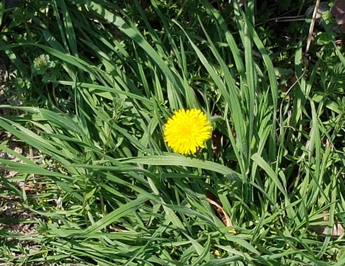
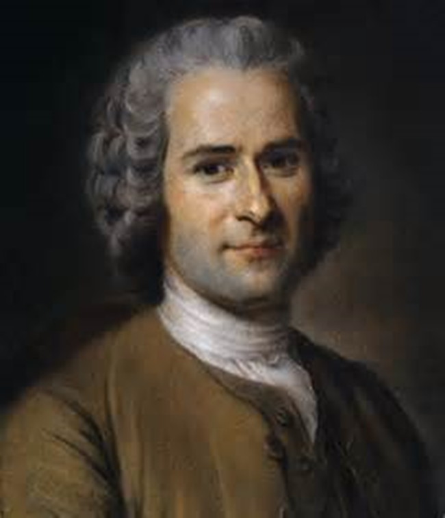

루소의 생애와 사상
루소(Jean Jacques Rousseau, 1712~1778)는 스위스 제네바에서 태어난 18세기 프랑스의 철학자이며, 계몽주의 사상의 대표적인 인물이다. 1768년 파리 에르므농빌에서 사망한 사회학자, 미학자, 교육론자로써 구속과 제약이 없는 자연스런 상태에서 조화롭고 건강하게 성장해야 한다는 자연주의 철학을 제시하였다.

루소의 어머니는 루소를 낳은 후 10개월 만에 세상을 떠났다. 루소(Rousseau)는 10세 때 아버지의 가출로 외삼촌에게 의탁된다. 정규교육을 거의 받지 못한 루소는 16세에 집과 고향을 떠나 방랑 생활을 하다가 프랑스의 바랑(Warens) 남작 부인을 만나 그곳에서 집사로 일하며 다양한 학문을 쌓게 되었다.
루소는 30세에 파리로 가서 상류계층의 문화를 접하면서 『학문과 예술론(Discours surles sciences et les arts)』, 『에밀(Emile, 1762)』을 출간하면서 인위적이고 부자연스러운 문화를 비판하였다. 그는 테레즈(Therese)와 동거(1768)하면서 다섯 명의 아이를 낳았지만 위탁시설에 맡김으로서 자녀를 교육시킨 경험은 없다.
루소는 영아는 자연스럽게 조화롭고 건강하게 발달해 나간다는 사전결정론을 최초로 밝혔다. 또한 인간은 본래 선하게 태어나므로 선한 본성을 보호하고 발달을 최대화 할 수 있음을 강조했다.

루소의 교육 목적 및 방법
1. 자연으로 돌아가라.
루소(Rousseau)는 완전한 교육을 위하여 자연에 의한 교육, 사물에 의한 교육, 인간에 의한 교육으로 구분하였다.
1) 자연에 의한 교육은?
인간 내부에 천성적으로 갖추어진 각 기관과 능력의 자연스러운 발달을 의미한다.
2) 사물에 의한 교육은?
외부 세계의 사물과 접촉하여 감각과 경험에 의한 것이다.
3) 인간에 의한 교육은?
개인의 천부적인 권리의 보전과 사회 속의 자연인을 형성하는 것으로써 자연적 인간을 추구한 것이다.
2. 교육은 출생과 동시에 시작한다.
루소(Rousseau)는 최초의 교사는 젖을 주는 어머니”라고 하여 어머니의 교육을 강조하였다. 특히 영아를 친모가 아닌 유모에게 맡기는 것은 자연을 배반하는 것이라고 하면서 양육은 반드시 어머니의 손에 의하지 아니하면 안 된다고 했다.
개인의 천부적인 권리를 보전하고 사회 속의 자연인을 형성하는 것으로 자연적 인간주의를 달성하기 위한 교육을 주장하였다. 즉, 인간은 태어날 때부터 가지고 있는 특성과 능력을 내재된 계열 단계에 따라 발전 가능한 존재로 본 것이다.
3. 소극적인 교육은 인간의 자연스러운 발달을 보장한다.
소극적인 교육을 위해서는 바람직한 환경 속에서 자유로운 활동을 존중하여야 한다고 하였다. 또한 그것이 바로 “자연인”의 육성을 목표로 한 교육으로서 스스로 보고, 스스로 느끼며, 또 자신의 이성으로 판단하여 행동하는 인간을 육성․실현시키게 된다고 하였다.
결론으로 환경은 아동의 행동을 변화시키는데 2차적 역할을 한다고 가정했다. 아동이 지닌 능력 이상으로 교육시키는 것은 좌절을 야기시키기 때문이다. 아동에게 무엇을 가르치기 위해서는 발달 속도에 알맞는 양육환경을 제공해야 한다는 관점을 이끌어 냈다. 루소가 생각한 아동교육은 전통적인 교육을 비판하고 아동중심 ․ 개성존중 ․ 생활중심 등 교육방법에 커다란 변화를 주었다.
출처: 곽노의, 김경철, 김유미, 박대근(2013). 영유아발달. 양서원.
권순황, 선애순,이형선(2015), 영아발달. 양서원
김영애, 선애순, 정효정(2018). 영유아발달. 양서원
박성연(2010). 아동발달. 교문사.
정옥분(2013). 영아발달. 학지사.
2022.01.23 - [분류 전체보기] - 로렌츠의 각인 이론 - 애착, 신체적, 정서적 민감한 시기
로렌츠의 각인 이론 - 애착, 신체적, 정서적 민감한 시기
로렌츠의 생애 및 사상 로렌츠(Konrad Zacharias Lorenz, 1903~1989)는 오스트리아에서 태어났고 어려서부터 유난히 동물에 관심이 높았다. 의사인 아버지의 희망에 따라 의학공부를 하였으나, 빈 대학에
think-sis.co.kr